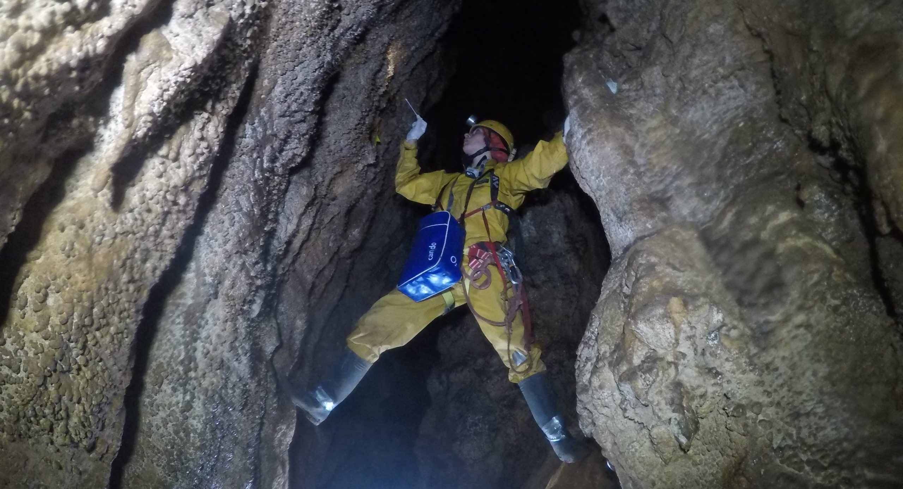
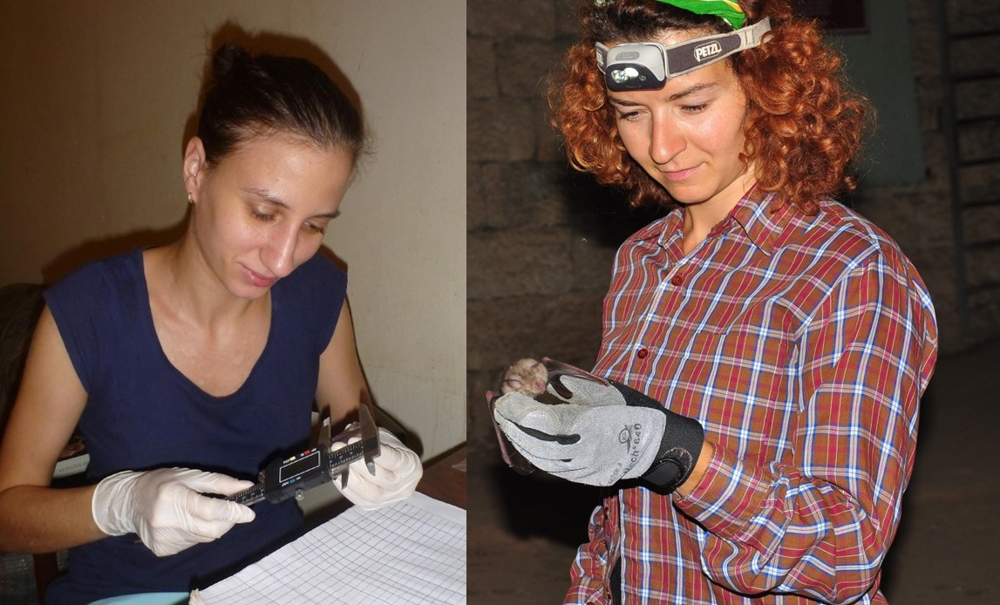
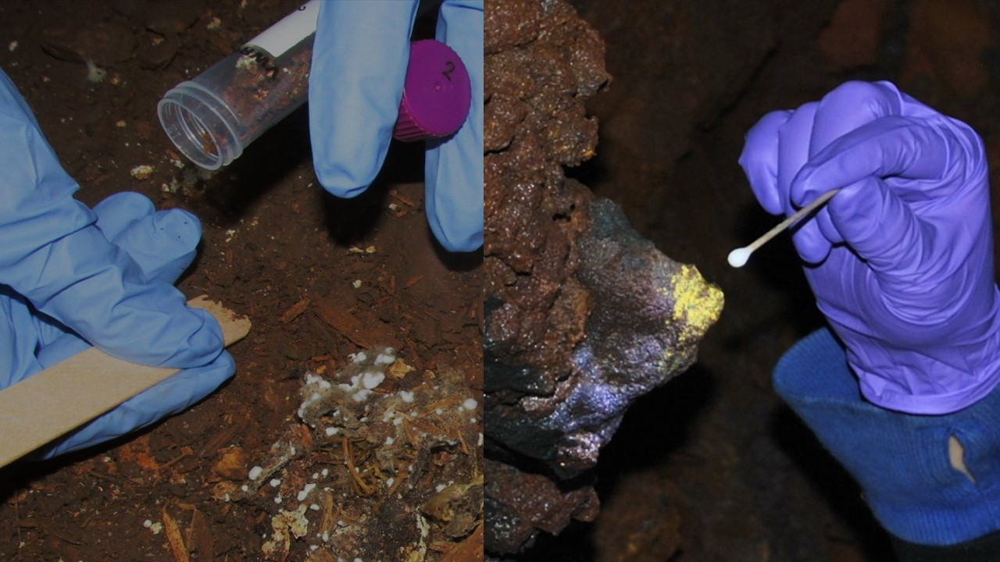

Projet Berger 2026
Pollution pathogène dans les grottes : qu’est-ce que c’est, pourquoi c’est important, et que peuvent faire les spéléos ? Une étude de cas au Gouffre Berger

La pollution pathogène, c’est quand un micro-organisme (champignon, bactérie, etc.) est transporté vers un nouvel environnement ou une nouvelle espèce hôte, où il peut provoquer des maladies parfois très graves. L’exemple le plus connu en spéléologie est celui du syndrome du nez blanc chez les chauves-souris, causé par le champignon Pseudogymnoascus destructans (Pd). Cette maladie a décimé plusieurs millions de chauves-souris en Amérique du Nord après avoir probablement été introduite involontairement par des spéléologues, via du matériel ou des vêtements contaminés provenant d’Europe de l’Est.
Mais les grottes abritent aussi énormément d’autres micro-organismes. Beaucoup sont totalement inoffensifs dans leur milieu d’origine, mais peuvent devenir problématiques s’ils sont déplacés ailleurs. Pour mieux comprendre ce risque, il est important d’évaluer à quel point les humains peuvent transporter des microbes d’une zone à une autre, à l’intérieur d’une même grotte ou entre différentes cavités.
C’est justement l’objectif de notre projet au Gouffre Berger. Nous allons prélever des échantillons tout au long de la cavité, ainsi que sur les combinaisons des spéléologues avant et après leur entrée dans Berger. Ces échantillons seront ensuite analysés par métagénomique afin d’identifier les nombreuses espèces de champignons et de bactéries présentes dans la grotte — et celles qui peuvent voyager avec notre matériel.
Si vous souhaitez participer au projet en nous laissant prélever des échantillons sur votre équipement, ou en collectant vous-même des prélèvements dans des parties profondes ou éloignées du Berger, n’hésitez pas à nous contacter ! Nous serons présents au Camp Berger du 2 au 7 août. Cherchez la tente arborant les drapeaux du Musée national d’histoire naturelle de Sofia et de National Geographic. Vous pouvez également nous contacter par e-mail (en anglais ou en français) pour demander des informations ou vous inscrire à l’avance.

